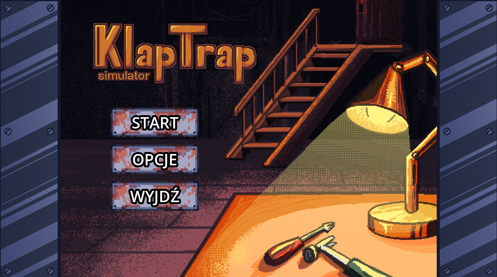

KlapTrap Simulator
Role: Game Designer
Role: Game Designer
Klap Trap is a simulator game developed within 24 hours during the Cyberiada contest as part of the Lem Game Jam, where all projects were inspired by Stanisław Lem’s novels. The game is based on “Wielkie Lanie” and follows the story of Trurl, who must escape after fulfilling Klapaucius’ wishes.
As a Game Designer, I was responsible for designing core game mechanics, interaction logic, and screen layouts with a strong focus on user experience. I created UI mockups for the graphics team and prepared detailed specifications of game mechanics and user flows for the programmer, ensuring clear communication between design and development.
